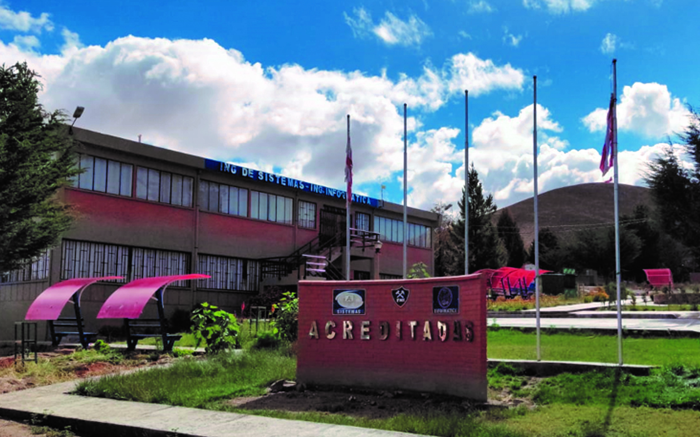

<div id="carouselExampleIndicators" class="carousel slide" data-ride="carousel">
    <ol class="carousel-indicators">
      <li data-target="#carouselExampleIndicators" data-slide-to="0" class="active"></li>
      <li data-target="#carouselExampleIndicators" data-slide-to="1"></li>
      <li data-target="#carouselExampleIndicators" data-slide-to="2"></li>
      <li data-target="#carouselExampleIndicators" data-slide-to="3"></li>
    </ol>
    <div class="carousel-inner">
      <div class="carousel-item active">
        
        <div class="carousel-caption d-none d-md-block">
          <h3>Ganadores O.P.E. 2019</h3>
        </div>        
      </div>
      <div class="carousel-item">
        
          <div class="carousel-caption d-none d-md-block">
              <h3>Creando ideas nuevas</h3>
          </div>        
      </div>
      <div class="carousel-item">
        
      </div>
      <div class="carousel-item">
        
        <div class="carousel-caption d-none d-md-block">
            <h3>Staff y Jueces</h3>
        </div>
      </div>
    </div>
    <a class="carousel-control-prev" href="#carouselExampleIndicators" role="button" data-slide="prev">
      <span class="carousel-control-prev-icon" aria-hidden="true"></span>
      <span class="sr-only">Previous</span>
    </a>
    <a class="carousel-control-next" href="#carouselExampleIndicators" role="button" data-slide="next">
      <span class="carousel-control-next-icon" aria-hidden="true"></span>
      <span class="sr-only">Next</span>
    </a>
  </div>
  
  <!-- <div class="row"> -->
    <!-- <div class="col-sm-12 col-md-8 col-lg-6 col-xl-11"> -->
      <!-- <div style="margin: 40px;">
        
      <p style="text-align: justify;">El desarrollo tecnológico del siglo XXI ha impactado notablemente en todo el quehacer humano; la humanidad ha tenido un avance acelerado y significativo en todos los niveles. Esto sin duda ha tenido mucho que ver con la creación de las computadoras; el software es uno de los elementos trascendentales de un computador, pues quizá es el aspecto que lo diferencia de las otras máquinas. El desarrollo de software es una de las actividades que ha llevado a muchos países a exportarlo y obtener ingresos importantes; muchas de las empresas o corporaciones más rentables a lo largo del mundo son aquellas que trabajan en el rubro del software. La actividad de programación es un aspecto crucial en el desarrollo del software y fomentar su práctica es abrir las puertas a nuevas oportunidades de desarrollo regional y nacional. La Olimpiada de Programación para Estudiantes de Secundaria es una competencia que inició el año 2012, orientada a jóvenes estudiantes de 1ro a 6to de Secundaria que tienen el gusto por la programación. 
        <strong>Esperamos rescatar e incentivar talentos que actualmente son necesarios para una sociedad del siglo XXI.</strong> </p> -->
      <!-- </div> -->
    <!-- </div> -->
    <!-- <div class="col-sm-12 col-md-8 col-lg-6 col-xl-3">

      <div style="text-align: center;">
        
      </div>
    </div> -->
  <!-- </div> -->